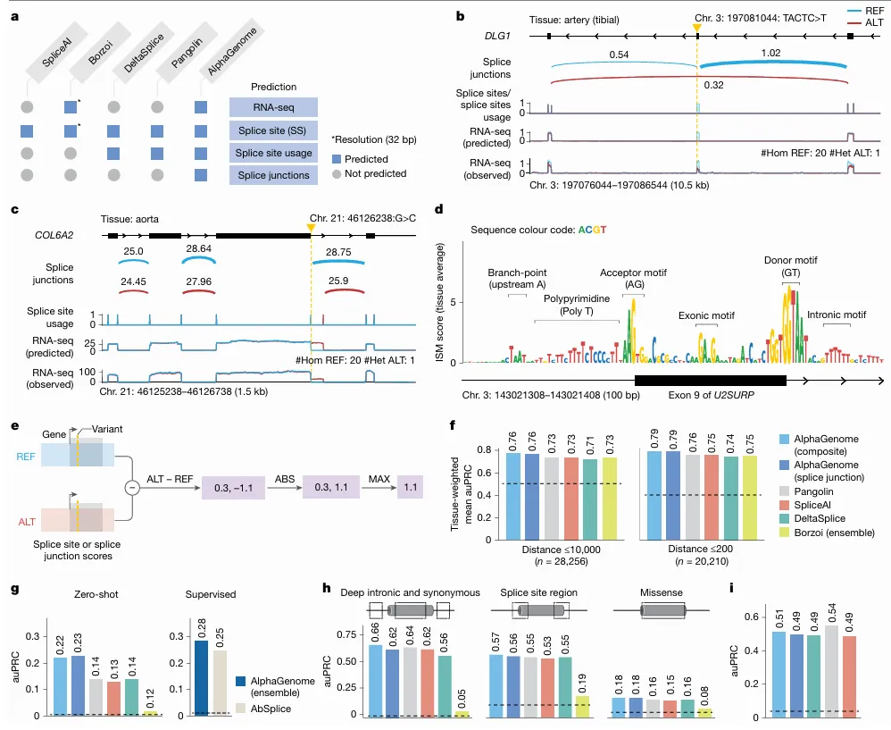
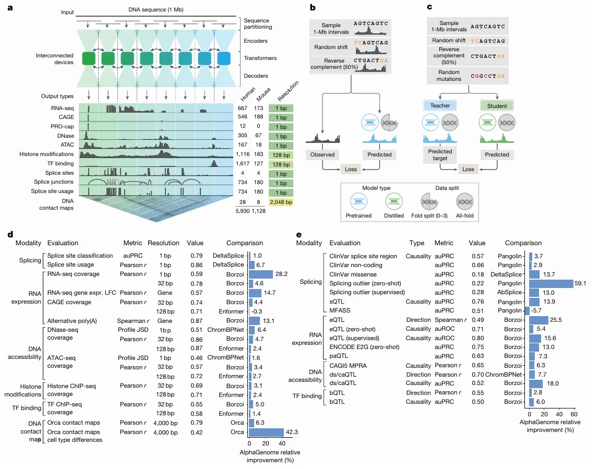

AlphaGenome is a deep learning model developed by Google DeepMind, announced in 2025 and detailed in Nature in January 2026, designed to interpret the “non-coding” or “dark” 98% of the human genome. It functions as a “sequence-to-function” model that predicts how DNA sequences regulate gene expression. You can access the model here.
source: google DeepMind
I am not really a biology person myself, but I was fascinated about this technology, so bear with me when I use tech terms to explain things.
The 98% problem Link to heading
If you open a biology textbook, most of the focus is on Proteins. We’ve spent decades obsessed with the 2% of our DNA that actually codes for the “stuff” our bodies are made of. The other 98%? For a long time, we literally called it “Junk DNA.”
But here’s the reality: If the 2% are the bricks that build the house, the other 98% is the electrical wiring, the thermostat, and the security system. It’s the “Regulatory Code” that tells your body when, where, and how much of those bricks to use.
Why Should you care? Link to heading
Imagine you have a bug in a software program. If the bug is in the logic (the 2%), the program crashes. But if the bug is in the config file (the 98%), the program might run, but it drains your battery in ten minutes or makes your screen flicker.
In humans, “bugs” in the 98% are responsible for complex diseases like diabetes, heart disease, and autoimmune disorders. Until now, we were mostly guessing how a tiny change in this “Junk DNA” led to a massive health problem. AlphaGenome changes that. It’s essentially the first Universal Debugger for the non-coding genome.
What does AphaGenome actually predict? Link to heading

Image explanation: a. Comparison of prediction outputs across deep learning models. All models predict at 1-bp resolution, except Borzoi (32 bp). Borzoi predicts splice sites implicitly through RNA-seq coverage, whereas others produce explicit predictions. b, Variant causing exon skipping in DLG1 (GTEx artery tibial tissue). Predicted splice junction, site usage and RNA-seq coverage are shown alongside observed coverage for reference (REF; blue) and alternative (ALT; red) alleles. c, New splice junction variant in COL6A2 (aorta), creating a new splicing donor and disrupting the extant one. d, ISM of U2SURP exon and flanking introns using the mean splice junction score across tissues. Splicing-related motifs are highlighted. e, Schema of splice variant effect prediction with AlphaGenome. The maximum difference between REF and ALT predictions across splice sites or splice junctions is used to score variants (Methods). f, Comparison of AlphaGenome composite and splice junction scorers versus other methods for classifying fine-mapped sQTL variants. Variants are stratified into two groups by distance to the splice site, as done in Borzoi. Tissue-specific auPRCs were averaged and weighted by variant count per tissue. g, Prediction of rare variants associated with splicing outliers. AlphaGenome was evaluated in both zero-shot and supervised settings (training an ensemble model similar to AbSplice). h, Classifying pathogenic versus benign ClinVar variants on the basis of splicing effects for deep intronic (more than 6 bp from splice sites) and synonymous (more than 3 bp from splice sites) variants, variants in the splice site region (within 6 bp intronic or 3 bp exonic) and missense variants predicted as ‘likely_benign’ by AlphaMissense. i, MFASS splicing variant classification (MPRA-tested variants). auPRC on the classification of experimentally validated splice-disrupting variants (data from Chong et al.).
Think of AlphaGenome as a “Multimodal Oracle.” You give it a sequence of DNA, and it predicts thousands of biological signals simultaneously across 11 different “modalities” (categories). It tells you:
-
Gene Expression: Will this DNA sequence actually turn a gene “On” or “Off”?
-
Splicing: Will the “instructions” be cut and pasted correctly, or will there be a typo that ruins the final protein?
-
Chromatin Accessibility: Is the DNA “open” enough for the body’s machinery to read it, or is it packed away like an old book in a box?
-
3D Contact Maps: Since DNA is a 3D ball of yarn, which parts are touching each other, even if they are far apart on the string?
The Breakthrough: Previous AI models could only “see” short snippets of DNA (like reading a single sentence). AlphaGenome has a 1-million-base-pair context window. It can read the entire “chapter” and understand how a “switch” at the beginning of the book affects a “gene” at the very end.
The Architectural Breakdown Link to heading

source: natureImage explanation: a, Model overview. AlphaGenome processes 1 Mb of DNA sequences and species identity (human/mouse) to predict 5,930 human or 1,128 mouse genome tracks across diverse cell types and 11 output types at specific resolutions (far right). Computation leverages sequence parallelism, breaking the 1 Mb of DNA sequence into 131-kb chunks processed across devices. The core architecture features a U-Net-style design comprising an encoder (downsampling the sequence), transformers with inter device communication and a decoder (upsampling), which feed into task specific output heads at their respective resolutions (detailed in Extended Data Fig. 1). b, The pretraining process, in which 1-Mb DNA intervals are sampled from cross-validation folds, augmented (shifted and reverse complemented) and used to train the model against experimental targets, yields fold-specific and all-fold teacher models. c, The distillation process, in which a student model learns to reproduce predictions from frozen all-fold teacher models using augmented and mutationally perturbed input sequences, yields a single model suitable for variant effect prediction. d, Track prediction: pretrained fold-split model. Relative performance improvement (%) of AlphaGenome over the best competing model for a selection of genome track prediction tasks across modalities and resolutions (Supplementary Table 3). The ‘value’ column represents the absolute performance of AlphaGenome. For all tasks shown, a value of 1.0 indicates perfect performance, with the exception of ‘profile JSD’, for which the ideal value is 0. Both competing models and AlphaGenome pretrained fold-split models were evaluated on held-out genome regions unseen during model training. For classification tasks, we adjusted the relative improvement to account for the performance of a random classifier (Methods). e, Variant effect prediction: distilled all-fold model. Relative performance improvement of AlphaGenome over the best competing model for a subset of variant effect prediction tasks (Supplementary Table 4). The distilled student AlphaGenome model is used for these evaluations. The ds/caQTL direction (causality) rows represent the average relative improvement across several similar datasets (Methods). ds, DNase sensitivity; ca, chromatin accessibility; JSD, Jensen–Shannon divergence.
To build AlphaGenome, DeepMind had to solve the “Context vs. Resolution” paradox. If you want to see far (1 million base pairs), you usually have to “blur” your vision (low resolution). If you want to see every single letter (1-bp resolution), you can usually only look at a tiny snippet. A hybrid U-Net + Transformer architecture that functions like a high-powered telescope with a wide-angle lens.
The U-Net Backbone: “Downsampling” the Noise Link to heading
AlphaGenome doesn’t just shove 1,000,000 base pairs into a Transformer that that would lead to trillions of calculations and would crash even the most powerful HPC cluster. Instead, it uses a U-Net style design, think of it as an “Information Funnel”
The U-Net “skims” the DNA. It uses convolutional layers to group every 128 bp into a single “feature.” It does it again, grouping those features until it has a representation at 2,048-bp resolution. The result is you would have effectively shrunk a 1-million-pixel image into a smaller, denser map that highlights only the “landmarks” (like where the protein-binding sites are).
The Transformer: Global Reasoning Link to heading
Once the U-Net has compressed the data, the Transformer blocks take over. Training this required sequence parallelism across 8 interconnected TPU v3/v4 devices. They literally split the 1Mb sequence across different chips that “talk” to each other to calculate the attention mechanisms. Because the sequence is now much shorter, the Transformer can easily “look” at the beginning and the end of the 1Mb window at the same time. This is where it discovers the long-range logic like realizing a switch at the very start of the sequence is controlling a gene 800,000 letters away.
The Decoder Link to heading
Finally, the model needs to give us answers back at the 1-bp level (we need to know exactly which letter is the problem!). The other side of the “U” (the Decoder) takes those global insights and maps them back onto the original high-resolution sequence.
The “Teacher-Student” Distillation Link to heading
This is the part that makes the AlphaGenome API usable.
-
The Teacher: DeepMind first trained an “ensemble” (a group) of heavy, slow models to get maximum accuracy.
-
The Student: They then used Knowledge Distillation to train a single, leaner “Student” model to mimic the ensemble’s results.
-
The Result: You get “ensemble-level” accuracy in a model that can score a genetic variant in under one second on a single NVIDIA H100.